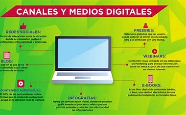

INFORMA, COMPARTE, INSPIRA: LA WIKI DEL PERIODISMO MODERNO
¡Únete a nuestra comunidad, comparte tus conocimientos y contribuye a construir un futuro más informado y conectado!
QUE SON LOS MEDIOS DIGITALES
Son los espacios en los cuales se genera la comunicación y el intercambio de información, entre usuarios y productores de contenido digital. Es decir, todas aquellas plataformas que se encuentran disponibles en internet. Generalmente, los medios digitales de comunicación incluyen software, imágenes, vídeos, archivos, base de datos y sonidos, entre otros. Esto hace que el contenido en este tipo de soportes virtuales, sea mucho más interactivo de lo que suele ser en las plataformas tradicionales.
